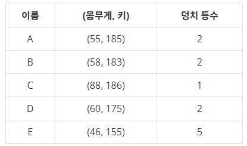

덩치 (백준, 7568번, 구현/브루트포스알고리즘)
문제
우리는 사람의 덩치를 키와 몸무게, 이 두 개의 값으로 표현하여 그 등수를 매겨보려고 한다. 어떤 사람의 몸무게가 x kg이고 키가 y cm라면 이 사람의 덩치는 (x, y)로 표시된다. 두 사람 A 와 B의 덩치가 각각 (x, y), (p, q)라고 할 때 x > p 그리고 y > q 이라면 우리는 A의 덩치가 B의 덩치보다 "더 크다"고 말한다. 예를 들어 어떤 A, B 두 사람의 덩치가 각각 (56, 177), (45, 165) 라고 한다면 A의 덩치가 B보다 큰 셈이 된다. 그런데 서로 다른 덩치끼리 크기를 정할 수 없는 경우도 있다. 예를 들어 두 사람 C와 D의 덩치가 각각 (45, 181), (55, 173)이라면 몸무게는 D가 C보다 더 무겁고, 키는 C가 더 크므로, "덩치"로만 볼 때 C와 D는 누구도 상대방보다 더 크다고 말할 수 없다.
N명의 집단에서 각 사람의 덩치 등수는 자신보다 더 "큰 덩치"의 사람의 수로 정해진다. 만일 자신보다 더 큰 덩치의 사람이 k명이라면 그 사람의 덩치 등수는 k+1이 된다. 이렇게 등수를 결정하면 같은 덩치 등수를 가진 사람은 여러 명도 가능하다. 아래는 5명으로 이루어진 집단에서 각 사람의 덩치와 그 등수가 표시된 표이다.

위 표에서 C보다 더 큰 덩치의 사람이 없으므로 C는 1등이 된다. 그리고 A, B, D 각각의 덩치보다 큰 사람은 C뿐이므로 이들은 모두 2등이 된다. 그리고 E보다 큰 덩치는 A, B, C, D 이렇게 4명이므로 E의 덩치는 5등이 된다. 위 경우에 3등과 4등은 존재하지 않는다. 여러분은 학생 N명의 몸무게와 키가 담긴 입력을 읽어서 각 사람의 덩치 등수를 계산하여 출력해야 한다.
입력
첫 줄에는 전체 사람의 수 N이 주어진다. 그리고 이어지는 N개의 줄에는 각 사람의 몸무게와 키를 나타내는 양의 정수 x와 y가 하나의 공백을 두고 각각 나타난다.
출력
여러분은 입력에 나열된 사람의 덩치 등수를 구해서 그 순서대로 첫 줄에 출력해야 한다. 단, 각 덩치 등수는 공백문자로 분리되어야 한다.
const fs = require('fs');
const [n, ...arr] = fs.readFileSync("/dev/stdin").toString().trim().split("\n");
getSizeOrder(n, arr);
function getSizeOrder(num, size){
let sizeArr = size;
let resultOrder = [];
let result = '';
let amount = num;
amount *= 1;
for(let l = 0; l < amount; l++){
sizeArr[l] = sizeArr[l].split(" ");
}
// sizeArr : ['a b', 'a1 b1', ..., 'an bn']
for(let i = 0; i < amount; i++){
let temp = sizeArr[i];
let num = 0;
temp[0] *= 1;
temp[1] *= 1;
for(let j = 0; j < amount; j++){
let comp = sizeArr[j];
comp[0] *= 1;
comp[1] *= 1;
if(i === j) continue;
if(temp[0] < comp[0] && temp[1] < comp[1]) num+= 1;
}
resultOrder.push(num + 1);
}
result = resultOrder[0];
for(let k = 0; k < amount -1; k++){
result += ' ' + resultOrder[k + 1];
}
console.log(result);
}
통계학 (백준, 2108번, 구현/정렬)
문제
수를 처리하는 것은 통계학에서 상당히 중요한 일이다. 통계학에서 N개의 수를 대표하는 기본 통계값에는 다음과 같은 것들이 있다. 단, N은 홀수라고 가정하자.
1. 산술평균 : N개의 수들의 합을 N으로 나눈 값
2. 중앙값 : N개의 수들을 증가하는 순서로 나열했을 경우 그 중앙에 위치하는 값
3. 최빈값 : N개의 수들 중 가장 많이 나타나는 값
4. 범위 : N개의 수들 중 최댓값과 최솟값의 차이
N개의 수가 주어졌을 때, 네 가지 기본 통계값을 구하는 프로그램을 작성하시오.
입력
첫째 줄에 수의 개수 N(1 ≤ N ≤ 500,000)이 주어진다. 단, N은 홀수이다. 그 다음 N개의 줄에는 정수들이 주어진다. 입력되는 정수의 절댓값은 4,000을 넘지 않는다.
출력
첫째 줄에는 산술평균을 출력한다. 소수점 이하 첫째 자리에서 반올림한 값을 출력한다.
둘째 줄에는 중앙값을 출력한다.
셋째 줄에는 최빈값을 출력한다. 여러 개 있을 때에는 최빈값 중 두 번째로 작은 값을 출력한다.
넷째 줄에는 범위를 출력한다.
const fs = require('fs');
const input = fs.readFileSync("/dev/stdin").toString().trim().split("\n");
getStatistics(input);
function getStatistics(numbers){
let amount = numbers[0];
let numArr = numbers;
let resultArr = [];
let result = '';
let sortArr = [];
let modeResult = {};
let modeMax = [];
let minNum = 0;
let maxNum = 0;
let answer1 = answer2 = answer3 = answer4 = 0;
numArr.shift();
amount *= 1;
for(let j = 0; j < amount; j++){
numArr[j] *= 1;
}
for(let i = 0; i < amount; i++){
answer1 += numArr[i];
}
answer1 = Math.round(answer1 / amount);
sortArr = numArr.sort(function(a, b) {
if(a > b) return 1;
if(a === b) return 0;
if(a < b) return -1;
});
answer2 = sortArr[Math.floor(amount / 2)];
numArr.forEach((x) => {
modeResult[x] = (modeResult[x] || 0) + 1;
});
modeMax = Object.values(modeResult);
Math.max.apply(null, modeMax);
minNum = Math.min.apply(null, numArr);
maxNum = Math.max.apply(null, numArr);
answer4 = maxNum - minNum;
console.log(answer1 + ' ' + answer2 + ' ' + answer3 + ' ' + answer4);
}
시계 사진들 (백준, 10266번, 문자열/kmp)
문제
상근이는 보통의 시계와는 다른 독특한 시계 사진 두장이 있습니다. 시계는 n개의 동일한 길이와 목적을 가진 시계 바늘들을 가지고 있습니다. 애석하게도 시계의 숫자들은 희미해져 각 시계 바늘들의 위치만 구분 할 수 있습니다.
우리의 상근이는 두 사진의 시계가 같은 시각을 나타낼 수 있는지 궁금해져 각 사진을 서로 다른 각도로 돌려보려고 합니다.
두 사진에 대한 묘사가 주어질 때, 두 사진의 시계가 같은 시각을 나타내는지 결정하세요.
입력
첫 줄에는 바늘의 수를 나타내는 정수 n(2 ≤ n ≤ 200 000)이 주어진다.
다음 두 줄에는 각각 n개의 정수가 주어지며, 주어지는 정수 ai(0 ≤ ai < 360,000)는 각 사진에서 바늘의 시계 방향 각도를 나타낸다. 이때 바늘의 각도는 특정 순서대로 주어지지는 않는다. 한 줄에는 같은 각도값이 두 번 이상 주어지지 않는다. 즉, 한 시계 안의 모든 각도값은 서로 구분된다
출력
두 시계 사진이 같은 시각을 나타내고 있다면 "possible"을 아니면 "impossible"을 출력하시오.
const fs = require('fs');
const [n, ...arr] = fs.readFileSync("/dev/stdin").toString().trim().split("\n");
function getIsPossible(num, angles){
let amount = num;
let watch1 = angles[0].split(" ");
let watch2 = angles[1].split(" ");
let resultFlag = true;
let runFlag = false;
amount *= 1;
for(let i = 0; i < amount; i++){
watch1[i] *= 1;
watch2[i] *= 1;
}
let differenceArr1 = [];
let differenceArr2 = [];
for (let i = 0; i < amount - 1; i++) {
differenceArr1.push(Math.abs(watch1[i] - watch1[i + 1]));
}
for (let i = 0; i < amount - 1; i++) {
differenceArr2.push(Math.abs(watch2[i] - watch2[i + 1]));
}
for(let i = 0; i < amount; i++){
if(differenceArr1[0] === differenceArr2[i]){
if(runFlag) break;
runFlag = true;
let compOrder = i;
for(let j = 0; j < amount; j++){
let temp1 = differenceArr1[j];
let temp2 = differenceArr2[compOrder];
if(temp1 >= 360) temp1 = temp1 - Math.floor(temp1 / 360) + temp1 % 360;
if(temp2 >= 360) temp2 = temp2 - Math.floor(temp2 / 360) + temp2 % 360;
if(differenceArr1[j] !== differenceArr2[compOrder]){
resultFlag = false;
}
if(i + j >= amount) compOrder = 0
else compOrder += 1;
}
}
}
console.log(resultFlag ? "possible" : "impossible");
}